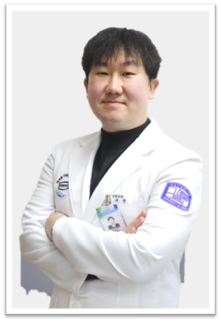
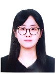
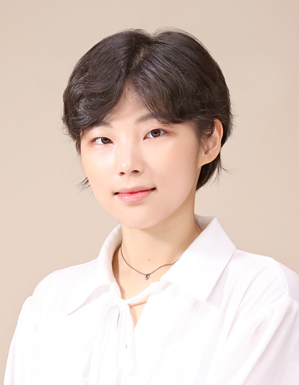
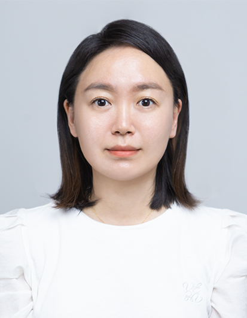
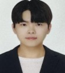
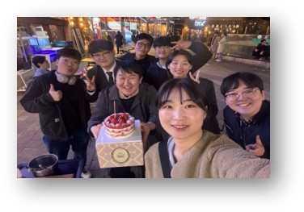
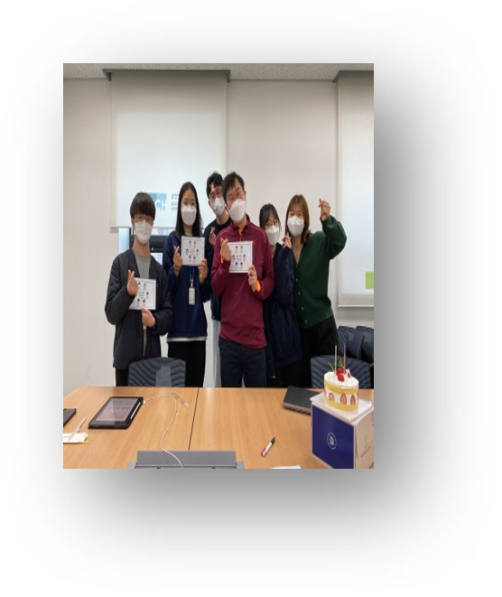
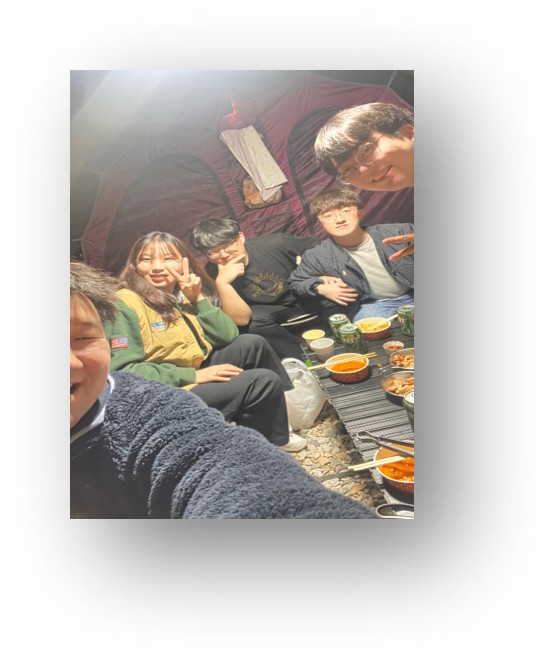
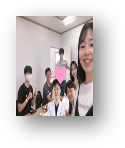

A translational neuroscience lab at The Catholic University of Korea — investigating cerebrovascular disease, vascular cognitive impairment, stroke, and subarachnoid hemorrhage — from patient registries to iPSC-derived models, omics, and regenerative therapy.
Hong-ik Biolab is a hybrid clinician-scientist laboratory that integrates the daily realities of stroke care with cutting-edge molecular, cellular, and computational neuroscience.
We are committed to advancing the understanding and treatment of cerebrovascular and neurodegenerative disease through translational research that begins and ends with the patient.
By combining real-world clinical data, iPSC and animal models, multi-omics, and AI-driven analytics, we generate evidence that informs clinical guidelines and seeds next-generation therapeutics.
Every research question begins in the operating room or stroke unit and is taken back to the lab for mechanistic dissection.
Evidence-based medicine, big data, regenerative therapy, metabolic dementia, and CSF omics — designed to inform each other.
Active joint research with Boston Children's Hospital, Harvard Medical School, and Yale School of Medicine.
From population-scale registries to single-cell transcriptomics — our research programs share a common goal: turning vascular and neurological insight into better stroke care.
Development of Korean national clinical practice guidelines for cerebrovascular disease, and systematic reviews / meta-analyses of key topics such as RNF213 genetic susceptibility in moyamoya disease across East Asian and non-Asian populations. We lead efforts on rule-in / rule-out diagnostic criteria stratified by ancestry, and translate findings into society-level guideline revisions.
Population-scale analyses of the Korean cerebrovascular disease cohort using HIRA national health insurance data — covering more than ten years of records. We build prognostic AI models, regional incidence maps, and policy-facing real-world evidence for stroke care.
Translational research on serotonergic neuronal cell transplantation for ischemic stroke recovery. We characterize engraftment and functional improvement in MCAO models using neurological scoring, grip strength, and single-cell transcriptomics of substantia nigra vs. forebrain neurons.
Comprehensive modeling of metabolic and vascular dementia using BCAS chronic hypoperfusion models, regional brain organoids, and cognitive / metabolic profiling. We have linked the Rho/ROCK pathway to neuroinflammation and white matter injury, and use iPSC-derived organoids to dissect human-specific mechanisms.
Proteomics and exosome analysis of cerebrospinal fluid in subarachnoid hemorrhage, using nanoparticle tracking analysis, TEM, pathway enrichment, and PPI networks to uncover early bio-diagnostic markers and mechanistic targets.
A clinician-scientist team spanning neurosurgery, neuroscience, big-data analytics, and stem cell biology — collaborating across the bedside, the bench, and the cohort.

Hybrid open and endovascular neurosurgeon and Director of the Stroke Center at Uijeongbu St. Mary's Hospital. M.D./Ph.D. in medical big data from Soonchunhyang University. Clinical practice covers more than 300 cerebrovascular cases per year — including aneurysm clipping and coiling, mechanical thrombectomy, radiosurgery, bypass, and carotid endarterectomy — with a parallel research portfolio in cerebrovascular disease, vascular dementia, big-data analytics in stroke, and regenerative therapy.
Currently a visiting researcher in the Vascular Biology Program at Boston Children's Hospital, Harvard Medical School, working with the Lee Lab on the endothelial biology of RNF213 in moyamoya disease.
Affiliations. Department of Neurosurgery & Medical Science, Uijeongbu St. Mary's Hospital · College of Medicine, The Catholic University of Korea · Vascular Biology Program, Boston Children's Hospital, Harvard Medical School (visiting, 2026).
Roles. Director, Stroke Center · Director, Clinical Practice Guidelines, KSCVES · Director, IT & Informatics, Basic Research Council, KNS · Secretary General, Korean Cerebrovascular Surgery Society.

Big data analysis of cardio-cerebrovascular disease · Nationwide cohort studies using HIRA national health insurance data · Real-world evidence and AI-driven prognostic modeling.

Evidence-based medicine and clinical guideline development · RNF213 meta-analysis in moyamoya disease across East Asian and non-Asian populations.

Lab management and project coordination · Clinical trial operations and data governance · Multi-site research administration and regulatory compliance.
Metabolic dementia and vascular cognitive impairment · Brain organoid modeling · BCAS chronic hypoperfusion models · CSF exosomes in subarachnoid hemorrhage.
Endothelial motility and RNF213 biology · iPSC-derived 2D / 3D vascular models · Mechanistic dissection of moyamoya disease.

Serotonergic neuronal cell transplantation for ischemic stroke recovery · MCAO animal models · Single-cell transcriptomics of substantia nigra vs. forebrain neurons.
김태용 · Data engineering & clinical informatics
문정기 · Patient registries & trial coordination
홍동용 · Class of 2022
박상원 · Class of 2023
이동훈 · Class of 2023
A snapshot of recent peer-reviewed work, ongoing manuscripts, and academic recognition. Full publication list is available via Google Scholar.
Recognition for outstanding contribution to cerebrovascular research (KSCVES).
For sustained academic achievement in neurovascular research (KNS).
Korean National Research Foundation physician-scientist training program.
Nationwide cardio-cerebrovascular disease analysis using national health insurance data.
24 primary studies · 4,410 cases · 10,311 controls — sensitivity / specificity stratified by East Asian, Korean, Chinese, and non-Asian populations (Yuna Jo, M.D.; Hong-ik Biolab, in revision).
Clinical trial platform for real-time outcome prediction and time-to-treatment impact visualization (with KoNES, J.H. Lee & Prof. Ko).
Functional and transcriptomic characterization of substantia nigra vs. forebrain serotonergic neurons in ischemic stroke recovery (Jeong-Ho Cha, M.S.; Hong-ik Biolab).
Lab moves, collaborations, and academic achievements from the past two years.
Dr. Oh joins Prof. Kwonmoo Lee's group in the Vascular Biology Program at Boston Children's Hospital, Harvard Medical School, to study endothelial mechanisms of RNF213 in moyamoya disease.
Visiting researcher at Yale School of Medicine focused on the genetic and molecular underpinnings of cerebrovascular disease.
Awarded for outstanding peer-reviewed contribution to cerebrovascular and endovascular surgery research.
Recognition of sustained translational research output from the Hong-ik Biolab team.
Group meetings, seminars, and team gatherings — the human side of the science.




We welcome inquiries from researchers, clinicians, and students interested in cerebrovascular disease, vascular dementia, regenerative therapy, and big-data approaches to stroke care.
Department of Neurosurgery
& Medical Science
Uijeongbu St. Mary's Hospital
College of Medicine
The Catholic University of Korea
Seoul, Republic of Korea
Vascular Biology Program
Boston Children's Hospital
Harvard Medical School
Joint research with Prof. Kwonmoo Lee's Lab — 2026